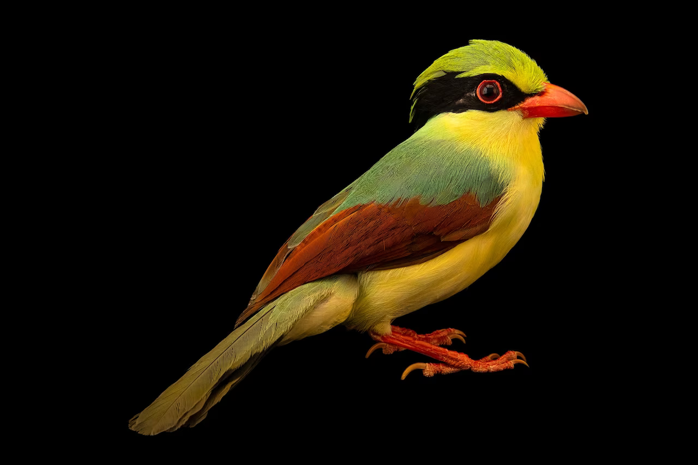

Jolie, who was rescued from a wildlife smuggler in 2017, now lives at the Los Angeles Zoo.
Photograph By Joel Sartore, National Geographic, Photo Ark
Published May 19, 2023 • 6 min read
Jolie the Indochinese green magpie is one lucky bird. Six years after being rescued from the illegal wildlife trade,the brilliantly hued animal is now a star of National Geographic's Photo Ark.
The project, led by National Geographic Explorer and photographer Joel Sartore , aims to document 20,000 species living in zoos and wildlife sanctuaries around the world to bring attention to endangered species and their threats. Jolie is the 14,000th addition to the ark; the 13,000th milestone species , announced in July 2022, was the spoon-billed sandpiper. ( Read why Sartore founded Photo Ark. )
Since its founding in 2006, Photo Ark has been featured in multiple national news outlets and books, as well as inspired a conservation fellowship program in conjunction with the Zoological Society of London called the National Geographic Photo Ark EDGE Fellows . The project will get another boost of public awareness on May 19, Endangered Species Day, when the U.S. Postal Service will release stamps of animals featured in the Photo Ark to commemorate the 50th anniversary of the Endangered Species Act.
Jolie is “very emblematic of one of the main problems in Southeast Asia, which is wildlife trafficking,” Sartore says. “The demand for birds is high, and it's leading to what we call silent forests. Her story is amazing and heartbreaking, and sadly not uncommon.”
In 2017, officials recovered 93 Asian songbirds from a smuggler's suitcase at Los Angeles International Airport, and Jolie is one of only eight that survived. She now lives at the Los Angeles Zoo and Botanical Gardens.
In Southeast Asia in 2022, at least 37,000 songbirds were confiscated from the wild , with the most birds taken from Indonesia, according to TRAFFIC , a nonprofit working to combat illegal trade. People who buy the animals keep them as pets or enter them into singing competitions that are popular in some Asian cultures. As a result, Indochinese green magpies are in decline across their range in mainland Southeast Asia and China, though they are not endangered. (Read how the black-market trade in wildlife has moved online.)
Nicholas Friedman , curator of ornithology at the Museum of Nature Hamburg in Germany, notes that birds in the genus Cissa, like Jolie, are among the most vividly plumed—and coveted—members of the family Corvidae, which most people in Europe and North America know best as black crows and ravens.
“Evolution has produced some really impressive colors and forms in the world, and it's a shame that our species is removing animals from the wild because of those same characteristics,” Friedman says by email.
“I hope that photos like the ones Joel Sartore is making for National Geographic will help people to appreciate wild animals in ways that aren't harmful to them—on camera, or in a museum, but not as illegal pets.”
Songbirds need our help
On paper, taking birds from the wild and selling them is illegal in many Asian countries, including Indonesia, but the laws are rarely enforced, says Chris Shepherd , executive director of Monitor, a British Columbia-based nonprofit focused on ending illegal and unsustainable wildlife trade in lesser-known species. That's in part because not enough people care about the fate of songbirds, which are also understudied, he says.
“It's hard to enough to get funding for elephants and tigers—try a green magpie,” he says.
One common method poachers use is to go into the forest and play recordings of birds singing, then trap the curious songbirds that respond in glue stuck to trees or with finely woven mist nets.
As a photo subject, Jolie was “very amenable, curious, and brave—she went into our photo tent without a problem," Sartore says.
Photograph By Joel Sartore, National Geographic, Photo Ark
The animals can then end up in sprawling bird markets . In some of Indonesia's biggest markets, that may include up to 30,000 birds on any given day—many of them dead or sick, with cages piled on top of each other, Shepherd says. The birds smuggled to more distant locations often die after being stuffed in boxes or suitcases or shoved in storage compartments of buses or cars.
Another Cissa species, the Javan green magpie, is critically endangered due to illegal trade. "The future of this species depends entirely on successful conservation efforts," Shepherd says.
“It's more important now than ever to stop the poachers, end the trade, close down the markets, and do everything we can to reverse the decline” of songbirds, he says.
A crucial part of that is a shift in how society views the black market in wildlife. “It should be socially unacceptable to participate in illegal bird trade, and [those that do] shouldn't be welcome in singing competitions,” he (Read how Cuba's songbird competitions are putting birds at risk.)
There are glimmers of hope, such as Indonesian conservation groups trying to protect their native birds. Cikananga Wildlife Centre , a rescue center in West Java, Indonesia, is breeding the Javan green magpie to ensure there's a captive population in case the wild birds disappear.
'True change is generational'
As he continues his quest, Sartore remains optimistic. He's particularly encouraged by the young people he''s met who are familiar with Photo Ark and the need to safeguard species.
“I have adopted the philosophy that all we can do is try and hopefully the public will respond to that more and more,” Sartore says.
“It seems like people are becoming more aware of climate change and habitat loss, but true change is generational—I'm hoping for the best.”